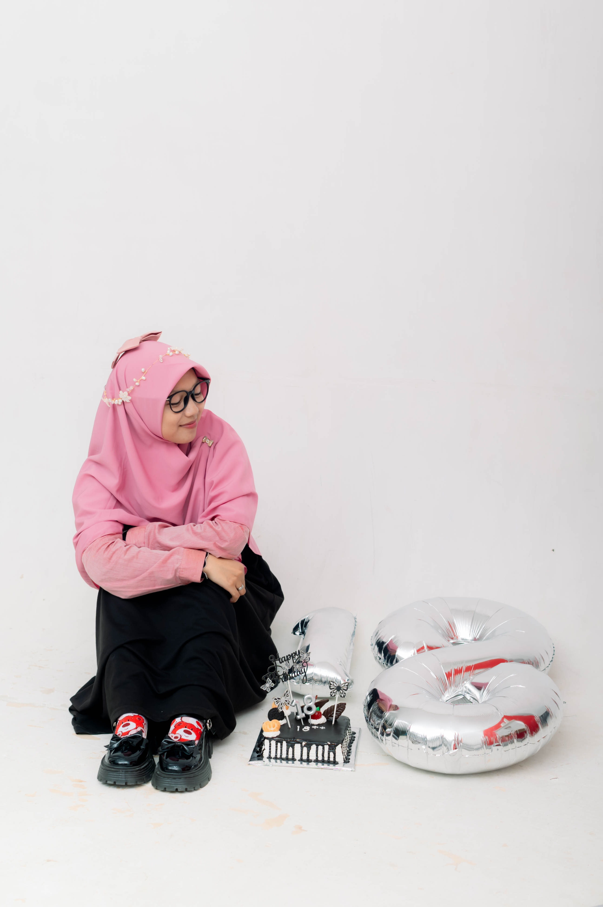

Aplikasi Kost TA'
Aplikasi pencarian kos untuk mahasiswa di sekitar kampus dengan filter harga dan fasilitas.
Lihat DetailTertarik pada pengembangan web, teknologi, dan pembuatan aplikasi yang dapat membantu menyelesaikan masalah sehari-hari dengan sentuhan estetik.

Beberapa proyek menarik yang saya kembangkan dan pelajari.
Aplikasi pencarian kos untuk mahasiswa di sekitar kampus dengan filter harga dan fasilitas.
Lihat DetailAplikasi perpustakaan untuk mengelola data buku, anggota, serta transaksi peminjaman dan pengembalian buku dengan sistem yang mudah digunakan.
Lihat DetailProyek mikro pembuatan tandon pintar yang mampu memantau ketinggian air secara real-time dan mengontrol pompa secara otomatis.
Lihat DetailSilakan kirim pesan melalui formulir di bawah ini.